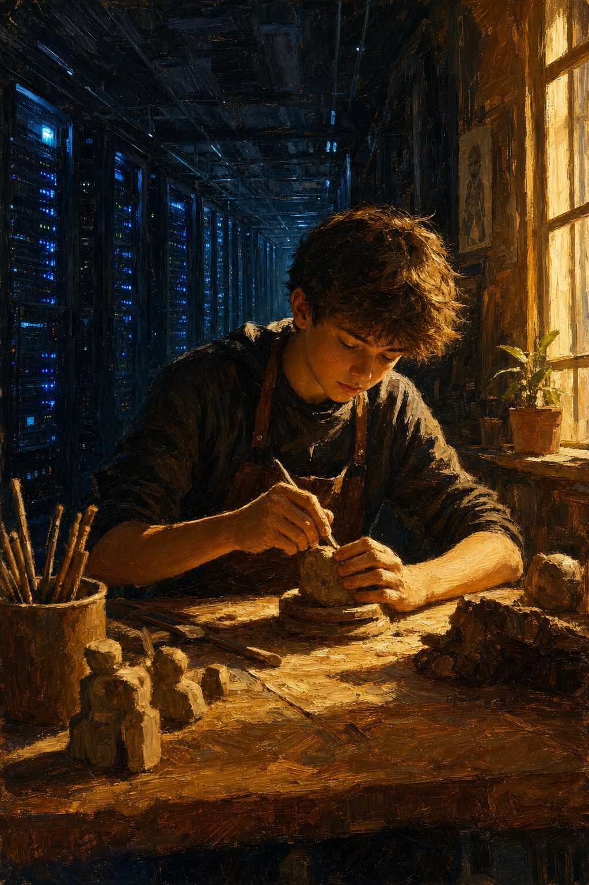
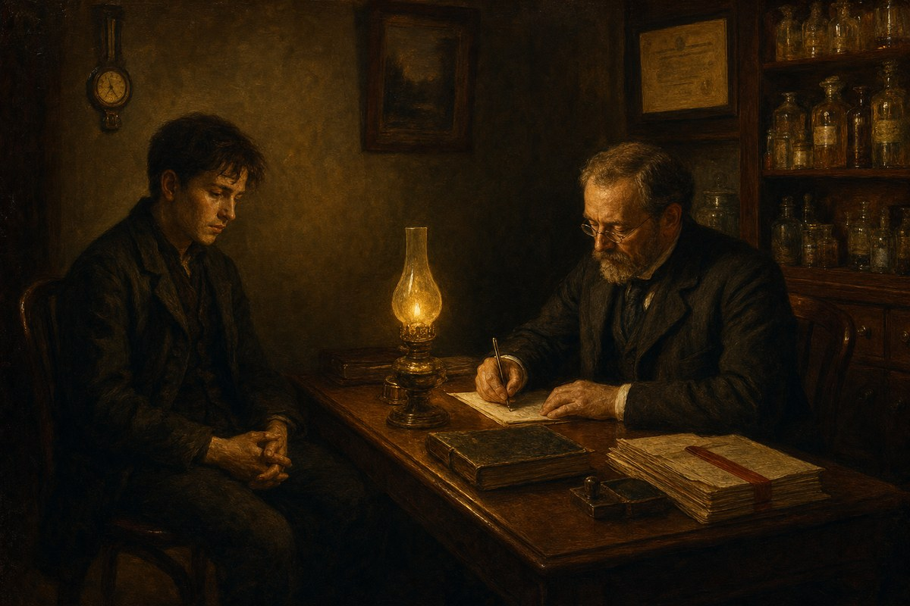

"Where there is a will, there is a way"
Why a generation of young people is sitting at home sick, and what parenting has to do with it.
Jacobus van Merksteijn
- Author --- Jacobus van Merksteijn
- Date --- 5 August 2026, Palma, Mallorca
- Section --- Opinion · accompanying Editie 3 (Onder het ijs) · response to FD report
- Direct source --- Jildou Beiboer, Alwine de Jong, Lien van der Leij, "Anxious, exhausted and depressed: why are more and more young people sitting at home sick?", Het Financieele Dagblad, August 2026
- Background --- Editie 3 of Het Open Vizier — Onder het ijs (the primal feeling, the three brain layers, the triple brain)
Het Financieele Dagblad published a report this week about young workers who end up in the WIA with anxiety, exhaustion and depression. The figures are stark: the influx of people under thirty into disability benefits is growing, psychological complaints are by far the biggest driver, and only one in seven returns to the workplace, partially or fully, within five years. The social costs of psychological complaints are rising to €51 billion a year. For 2026, the WIA shortfall amounts to €285 million, rising to more than €1 billion within five years.
The article describes symptoms. It describes them well, but remains within the frame that produces the symptoms themselves. Prevention, better HR, less stigma, more flexibility from managers. All true. All on the wrong side of the problem.
This piece is about the other side. The place where the problem is made: parenting, and the foundation beneath it.
The three brain layers, briefly

A human being has three layers stacked on top of one another, talking to each other. The bottom layer is the primal feeling: hunger, fear, safety, belonging, "this isn't right". The middle layer is emotion: sadness, anger, shame, pride, social mirroring. The top layer is reason: plans, goals, reasoning, language.
Those three layers must engage in dialogue with one another. The bottom layer sends the signal, the middle layer gives it colour, and the top layer turns it into a decision. If one of those layers is skipped, the body takes over. Tinnitus. Heart palpitations. Panic. Two years at home on the sofa.
Nina, the protagonist of the FD article, describes precisely that:
"Physically, I was completely spent; I had tinnitus, heart palpitations, I was in a complete panic and extremely emotional."
That is not an illness. It is a bottom layer finally being given the floor, after being skipped for two years.
What we do to children

A child enters the world with a functioning bottom layer and nothing else. Hunger, cold, fear, comfort. "Mummy, I'm hungry" is the first sentence in which all three layers work together: the body feels, the feeling gives it a name, the mind asks. If an adequate response follows — food, warmth, an arm around you — the child learns that its bottom layer is allowed to speak, and that speaking helps.
In two generations, we have destroyed that learning process. Not because we do not love our children, but because we can no longer see it. We do not see it because seeing it would mean arranging our own lives differently. And we cannot do that, because the mortgage has to be paid, the job has to be kept, the diary has to be full.
Concretely, what we do
- We place children in childcare too early and for too long where signals from the lower layer cannot be responded to individually. One caregiver for six babies cannot adequately mirror individual hunger, individual fear, or an individual need for comfort. The child learns: my signal is of no use, so I will stop signalling.
- We respond to the lower layer with the upper layer. A child cries: "what's wrong?", "use your words", "why are you sad?". A three-year-old has no words for the lower layer. It needs an arm around it, not a question. The question is training in skipping the middle layer.
- We reward the upper layer exclusively. Grades, goals, performance, "well done". The lower and middle layers receive no language, no space, no recognition. By the age of eighteen, there is a young adult who can reason perfectly about their feelings, but no longer feels them.
- We let social media hijack the middle layer. Instagram is a middle-layer machine: constant social comparison without the lower layer (a real body, real safety) and without the upper layer (context, time, judgement). Nina put it literally: "All my friends had cars too, the first one was pregnant, everyone was making good career moves." That is the middle layer running at full power while the lower layer has no address.
Education in the age of AI

Our education system was already an upper-layer machine before AI arrived. Grades, tests, goals, outcomes. Now that AI makes the upper layer cheap — every pupil can have an essay, a sum, an analysis produced — education's upper-layer monoculture suddenly lies empty. There is nothing left that distinguishes a human being from a language model.
What remains is what AI does not have: a functioning lower layer, and a middle layer that is in dialogue with it. A person who can feel that something is not right before they can reason it through. A person who knows when they are tired, afraid, or do not belong somewhere. A person who can say "no" because their body says so, not because their mind has constructed an argument.
That is what education must learn to teach, and it does not yet know how. It tries to fight AI with detection, bans, and assignments that are AI-proof. That is treating the symptoms. The real task is a reversal: teach a child to reclaim their lower layer. Teach them rest, boredom, physical presence, real conversations, real nature, real craftsmanship. Things AI cannot do, because AI has no body.
The primal feeling in professional life

What you subsequently see on the shop floor is the bill coming due. A young person on a temporary contract who hears that "the boss's door is always open" but is biologically incapable of walking through it, because their lower layer is signalling correctly: contract not renewed = no money = no home.
72% of employees see absence coming in advance. 11% of managers pick up on it. That gap is not a communication deficit. It is a power asymmetry that economically forbids the lower layer from speaking.
And when that lower layer ultimately takes over anyway — heart palpitations, panic, two years at home — the system's response is: "go to the doctor". Medicalisation. Diagnosis. Benefits. The problem is laid at the individual's door, in the form of a disorder, and treated with individual therapy and pills. The upbringing, the education, the contract, the Instagram comparison, the childcare structure, remain untouched.
Make-up economics
That is not a conspiracy. It is a system clearing up its own failures of production through its own circuit of consumption. In economic jargon: it is make-up economics. WIA costs, healthcare costs, occupational health service revenues, and insurance premiums all appear neatly in GDP.
GDP grows. The productive core — young, healthy, working people — shrinks. The shopping basket grows while the production machine breaks down.
Why we do not see it
We do not see it because seeing operates through a different lens. A lens that says: you must keep your child at home when they are small, or place them in small groups with consistent caregivers. A lens that says: you must work less, consume less, perform less, scroll less. A lens that says: the perfect picture is the disease, not the norm. A lens that says: a temporary contract is not a form of employment but a biological muzzle.
That lens cannot be reconciled with our daily lives. We have the mortgage, the job, the schedule, the school, the childcare. We cannot simply stop. So we carry on. And because carrying on is incompatible with seeing, we stop seeing. Not out of malice. Out of necessity.
Then we combat the symptoms that arise from not seeing. More prevention in the workplace. Better HR training. Anti-stigma campaigns. More psychologists. Better apps. Shorter waiting lists. All useful. All on the wrong side.
What you hear in the background
Every euro spent on prevention, occupational health services, medication and therapy is taken from an economy that cannot afford to spend that euro a second time. And every young person who spends two years at home is a young person who no longer produces that euro.
Two movements colliding: GDP rises through the repairs, while real productive capacity falls because of the damage. Sooner or later, the two meet. Usually in a shock.
Where the mistake lies, and where the way forward is

The mistake does not lie with the parents, not with the teachers, not with the managers, not with the young people themselves. The mistake lies in the fact that we have built a society in which the bottom layer of a human being no longer has a legitimate address. Not at home, not at school, not at work, not on social media, not in the consulting room.
The way forward begins where the mistake begins: with the very first sentence. "Mommy, I'm hungry" must receive an answer that addresses all three layers. Food (bottom). An arm (middle). A word (top). In that order. Every day. For years.
That requires a society to enable parents to hear and answer that sentence. That means:
- Time, calm, closeness — no performance pressure in the first seven years.
- Childcare on a human scale, not an economic one.
- Education that trains the bottom layer before filling the top layer.
- Forms of employment in which a young person is allowed to let their bottom layer speak without losing their livelihood security.
That is a different lens. It is expensive in the short term and cheap in the long term. It is politically uncomfortable and biologically necessary. It is precisely what we do not do because we do not want to see it.
Where there is a will, there is a way. That will is not there yet. It is this generation's task to create it — not by working harder on combating symptoms, but by daring to look at what we are doing to our children at the moment they first say: "Mommy, I'm hungry". And then doing what is necessary to be able to give that answer.
Food. An arm. A word. In that order.
Further reading — Editie 3
- The primal feeling — what the first layer is and how we feel it
- The three brain layers — primal feeling, mammalian brain, human brain
- What we do to children — the systematic squeezing
- Mommy, I'm hungry — constant presence and the cost of absence
- Education in the age of AI — why everything we learn now will soon no longer count
- The primal feeling in professional practice — the bill coming due at the workplace
Source
Jildou Beiboer, Alwine de Jong, Lien van der Leij, "Anxious, exhausted and depressed: why are more and more young people staying home sick?", Het Financieele Dagblad, August 2026.